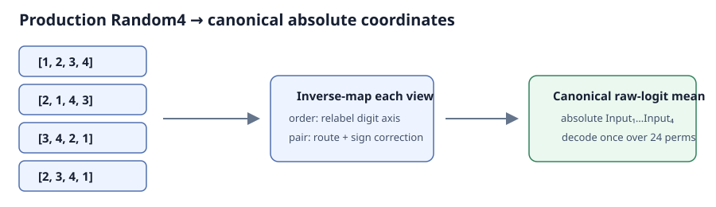

Multimodal AI
Multimodal Scene Reordering
SNU AI Challenge · GeekSeek · 2026 · 8th Place
Recover the chronological order of four shuffled images using a vision-language model.

Task
Given a sentence and four shuffled frames, predict the chronological rank of each input image.
- Valid ordering: Use each image exactly once in the predicted sequence.
- Input-order sensitivity: Align predictions from different image arrangements before combining them.
My contribution
Member of Team GeekSeek in the 2026 SNU AI Challenge. The method and results below describe our team submission.
Temporal ordering method
1. Vision-language model adaptation
Adapt Qwen3.5-27B with LoRA and structured readouts for temporal ordering.
- Pairwise evidence: Six readouts compare the temporal order of image pairs.
- Position evidence: Four readouts score chronological positions.
- Training: Use temporal-gap supervision and hard-negative ranking in the final training stage.
2. Constrained permutation decoding
Combine pairwise and position evidence to score all 24 valid image orderings.
- Sequence selection: Choose the highest-scoring permutation so every image appears once.
- Submission format: Convert the ordered image sequence into per-input ranks using the inverse permutation.
3. Aggregation across input orderings
Evaluate four image arrangements to reduce sensitivity to presentation order.
- Alignment: Map each arrangement’s logits back to the original image identities.
- Aggregation: Average the aligned logits and decode the combined evidence.
- Validation: Test the permutation mappings and final submission format.
4. Snapshot averaging
Average nine language-LoRA snapshots from one training trajectory in CPU float32.
- Single adapter: Merge the snapshots into one adapter without extra model passes.
- Inference cost: The four input-order evaluations remain part of the final pipeline.
Competition result
2026 SNU AI Challenge. Results refer to the official final-selected submission.
| Measure | Result |
|---|---|
| Final placement | 8th |
| Official private score | 0.91463 |
Later Crop-TTA experiments are recorded separately in the repository.